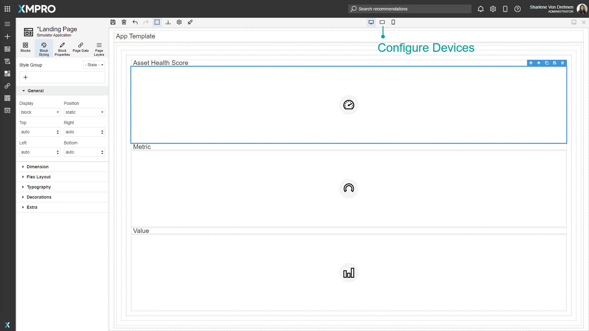
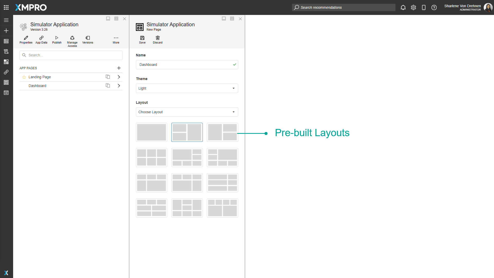
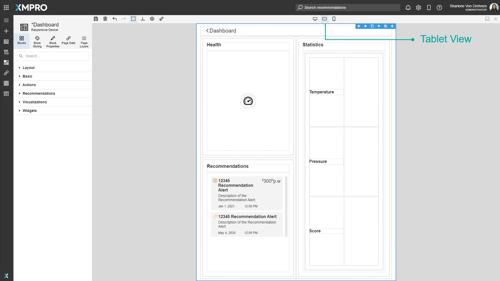
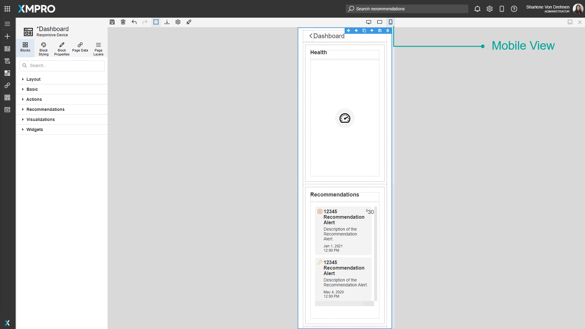
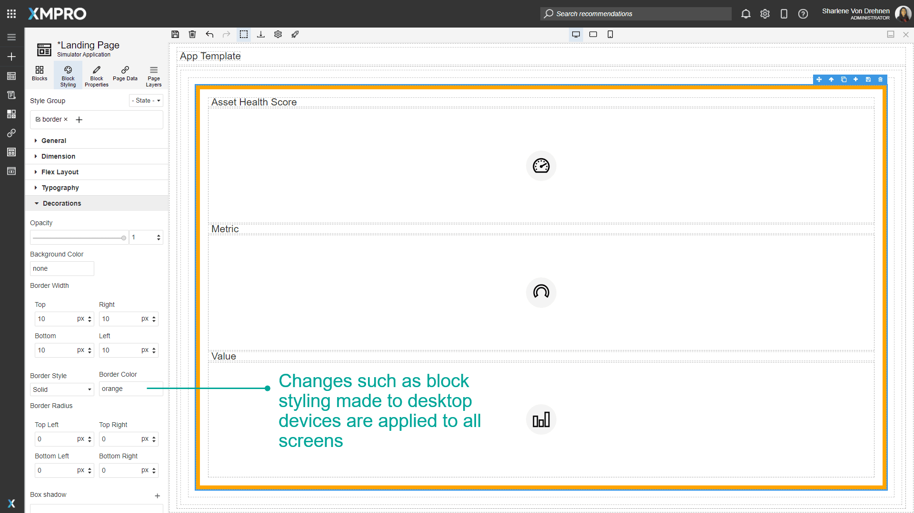
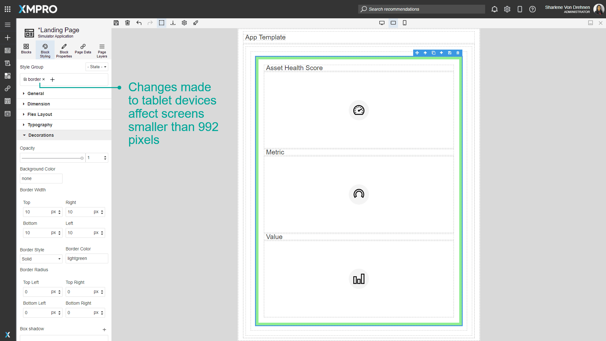
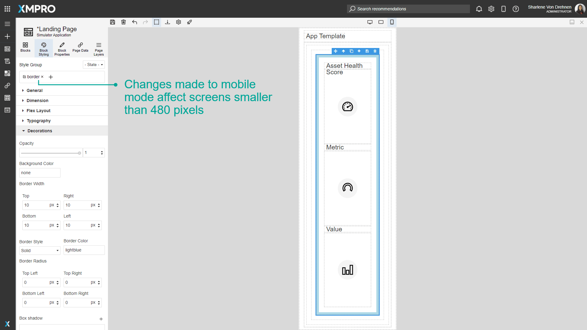

Devices
An App can be deployed on multiple devices such as a laptop, tablet, or phone. The style and position of the Blocks can be configured to make sure it is compatible with the screen width of the device. This is needed in order for you to view the way the Application looks on multiple devices, and to ensure users have a good user experience regardless of the screen size they are viewing your Application on.

Responsive Design
All pre-built page layouts come with predefined styles and media queries to ensure that Blocks are responsive on different devices.

When using a pre-built layout, the positions of the Blocks will automatically change when switching between desktop, tablet, and mobile in order to fit everything comfortably on the page regardless of the screen width.


Configuring Desktop, Tablets, and Phones
Changes such as block styling made to desktop devices are automatically applied to devices of all sizes. Changes made to tablet devices affect screens smaller than 1366 pixels, and changes made to mobile mode affect screens smaller than 896 pixels.
If a different style is configured for both desktop and mobile mode, the mobile mode style will override the styles of larger devices when viewing in mobile mode. The same applies to the tablet.



The styles applied to devices are applied to both the selected style group and the selected state as well.
Further Reading
Last modified: December 03, 2025